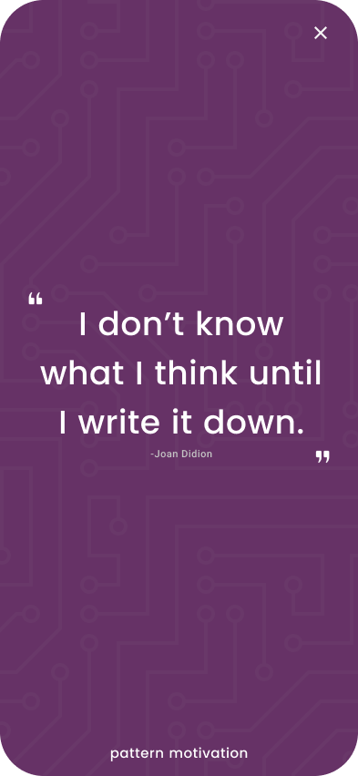
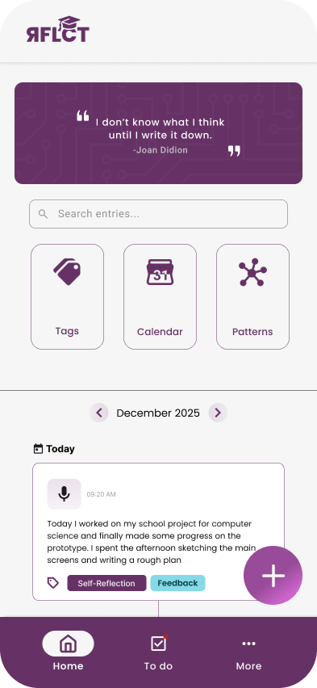
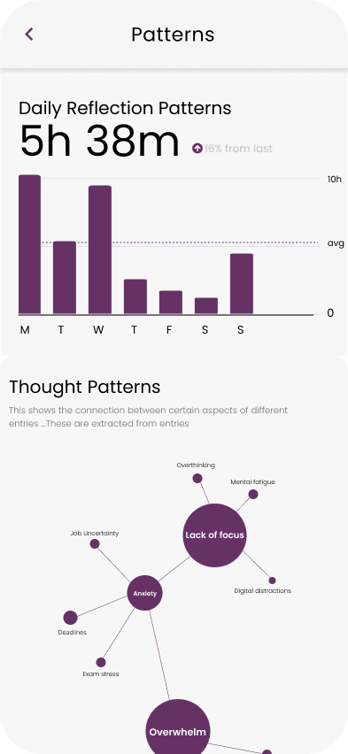
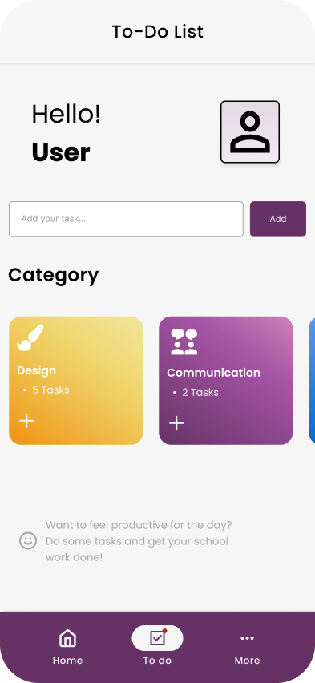
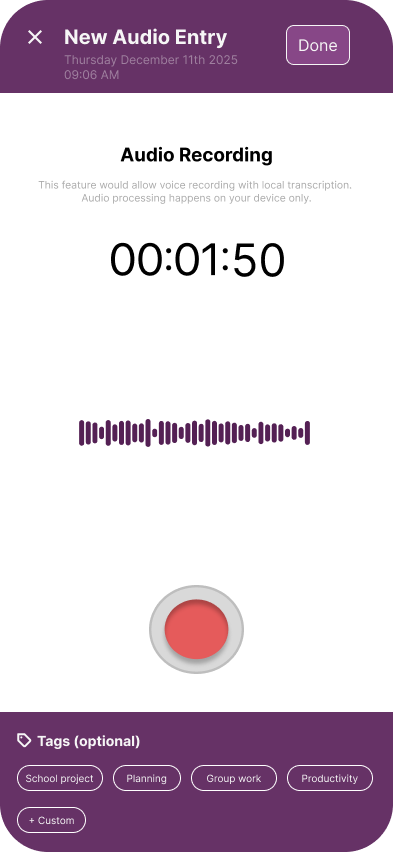
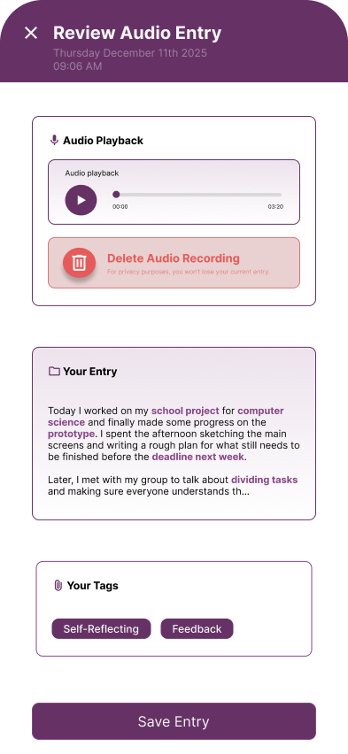
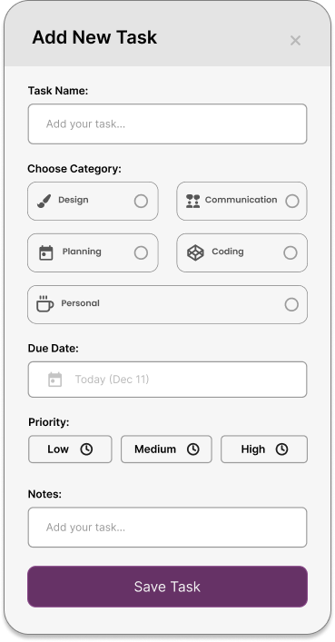

RFLCT
REFLECTION & JOURNALLING APP
Roles & Tools Used
USER INTF.
Designed a smooth functional user centric interface

USER EXP.
Mapped out user journeys, scenarios, built around them



ABOUT PROJECT
RFLCT is a mobile concept for a privacy-first, self-led reflection app designed for both neurodiverse users and users prone to cognitive overload.
The project explored how audio and text-based journaling can support wellbeing without nudging, judgment, or therapy-like AI behavior.
The project balances accessibility, cognitive load reduction, and user autonomy, while staying grounded in user data and stakeholder constraints.


MAIN PROBLEM
Most journaling tools assume users can easily organise their thoughts, write consistently, and feel safe expressing themselves. Research showed this assumption breaks down quickly, especially during moments of emotional or cognitive overload.
Students primarily reflected only after negative or impactful events .
The core challenge was to design a reflection system that supports clarity without directing behaviour, while remaining ethically responsible and technically realistic.



END RESULTS
To reduce cognitive load without nudging, optional neutral prompts were introduced to help users organise their thinking without influencing emotions or actions. AI is used only to structure and summarise user input, never to interpret feelings or give advice, and user reflections are clearly separated from AI-generated content to maintain trust and transparency.
The final outcome is a dual-input reflection system that allows users to switch between text and audio depending on context and comfort.